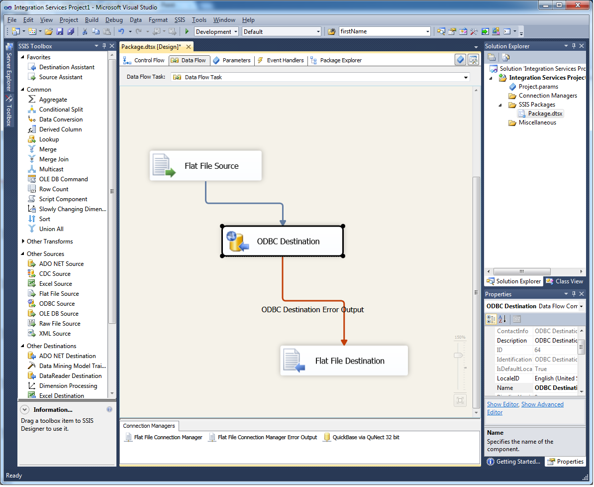
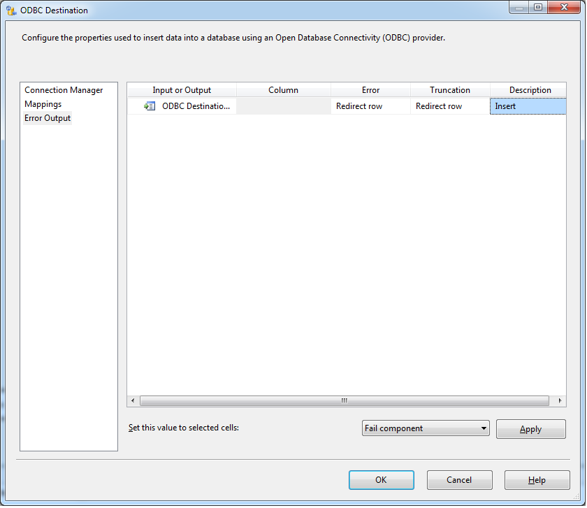
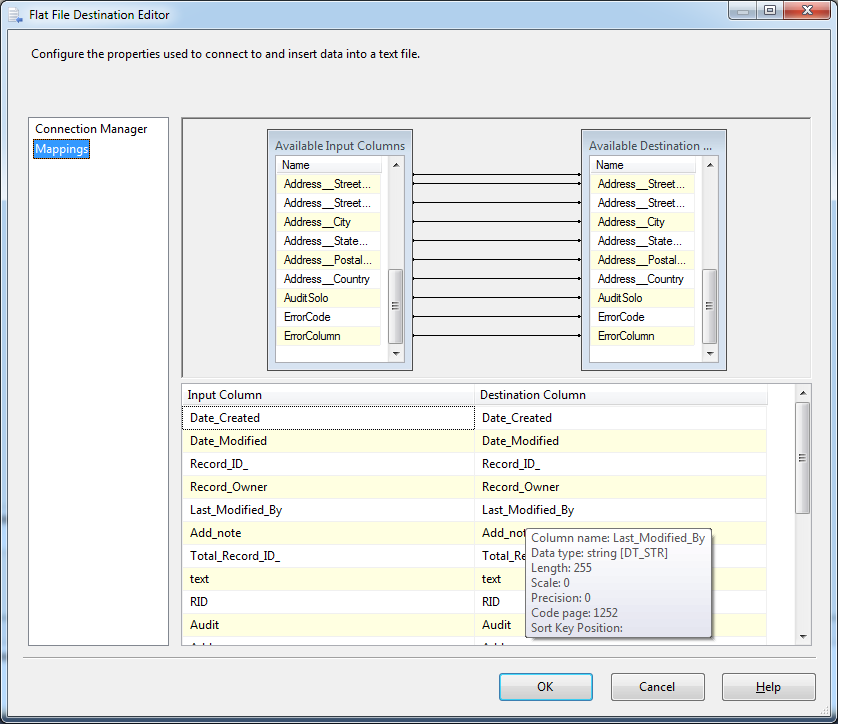

Application Note for QuNect ODBC for QuickBase
Sending Errors to a Text File in SQL Server Integration Services (SSIS)
This simple data flow sends data from a flat text file to QuickBase via QuNect ODBC for QuickBase.
To get details about your data flow errors you'll need to configure the error output in the ODBC Destination to Redirect row.
Then in your flat file destination map your columns. SSIS will do this automatically for you when you send it to a flat file destination that SSIS is creating for you. The flat file destination will reveal row by row error details! Or it will be empty if your data flow encounters no errors.
